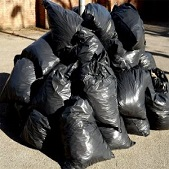
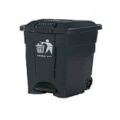
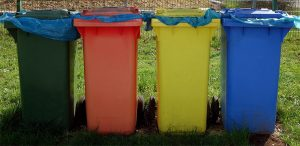

Índice
¿Qué es la basura?

Definición de la basura

Clasificación de la basura

Tipos de basura

Manejo y tratamiento de la basura
Clasificación de la basura:
En función de sus características y orígenes, la basura se les clasifica en tres grandes grupos de residuos: residuos sólidos urbanos (RSU), residuos de manejo especial (RME) y residuos peligrosos (RP).
Basura de Residuos sólidos urbanos (RSU):
La basura de residuos sólidos urbanos 1 son los que se generan en las casas habitación como resultado de la eliminación de los materiales que se utilizan en las actividades domésticas (p. e., de los productos de consumo y sus envases, embalajes o empaques) o los que provienen también de cualquier otra actividad que se desarrolla dentro de los establecimientos o en la vía pública, con características domiciliarias, y los resultantes de las vías y lugares públicos siempre que no sean considerados como residuos de otra índole (DOF, 2003).
Basura de Residuos de manejo especial (RME):
La basura de Residuos de Manejo Especial (RME) están definidos en la Ley General para la Prevención y Gestión Integral de Residuos (LGPGIR) como aquéllos generados en los procesos productivos que no reúnen las características para ser considerados residuos sólidos urbanos o peligrosos, o que son producidos por grandes generadores de residuos sólidos urbanos (DOF, 2003).
Basura de Residuos peligrosos (RP):
La gran diversidad de sustancias químicas que existe en la actualidad, si bien es cierto que ha servido para mejorar significativamente el nivel de vida de la población, también ha ejercido una presión importante sobre el medio ambiente y la salud humana (ver el Recuadro Las sustancias químicas en números ).
Entre estos desechos se encuentran los residuos peligrosos, definidos como aquellos que poseen alguna de las características CRETIB que les confieren peligrosidad (corrosividad, C; reactividad, R; explosividad, E; toxicidad, T; inflamabilidad, I; o ser biológico-infecciosos, B), así como los envases, recipientes, embalajes y suelos que hayan sido contaminados, según lo establece la Ley General para la Prevención y Gestión Integral de los Residuos (LGPGIR). La norma oficial mexicana NOM-052-SEMARNAT-2005 establece las características, el procedimiento de identificación, clasificación y los listados de los residuos peligrosos.
-- Otra forma de clasificar la basura es por su composición y se pueden clasificar como basura orgánica, basura inorgánica y basura inorgánica no reciclable. --